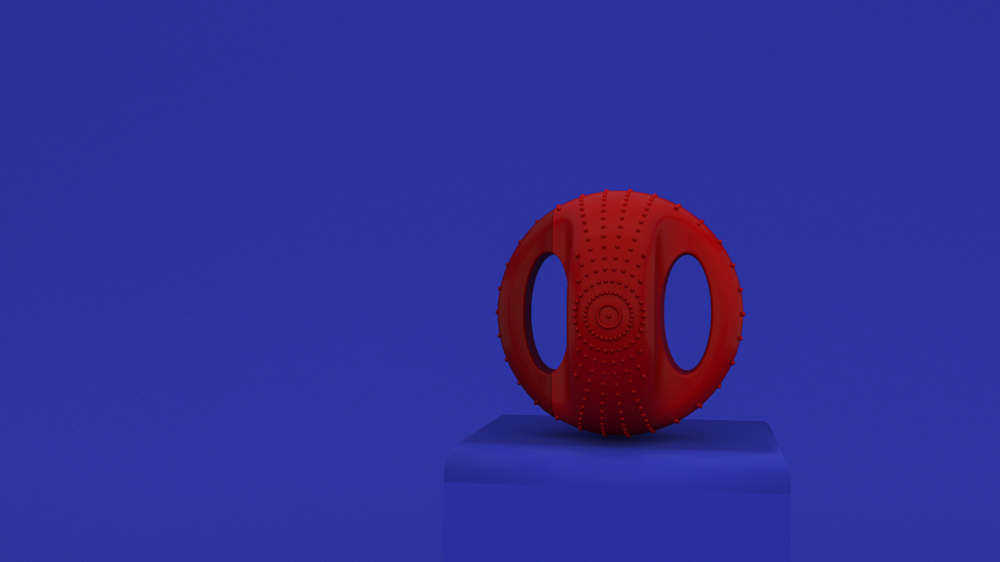
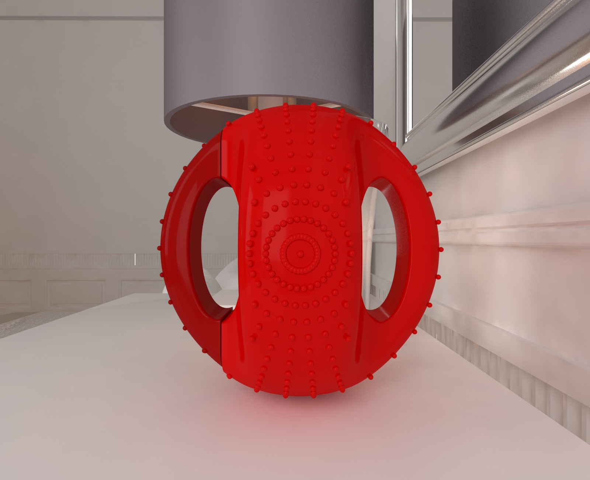
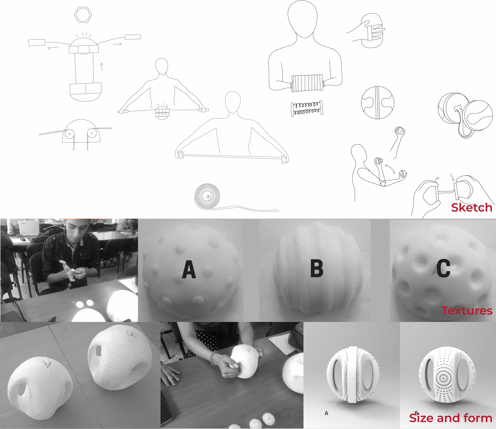
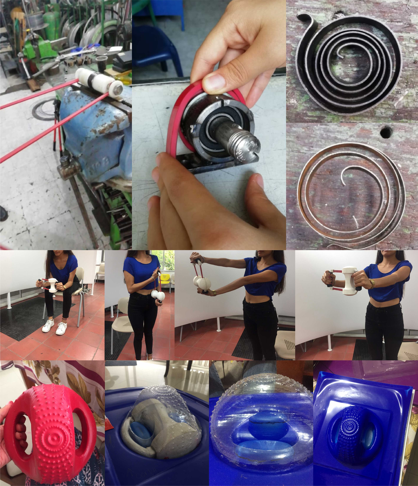
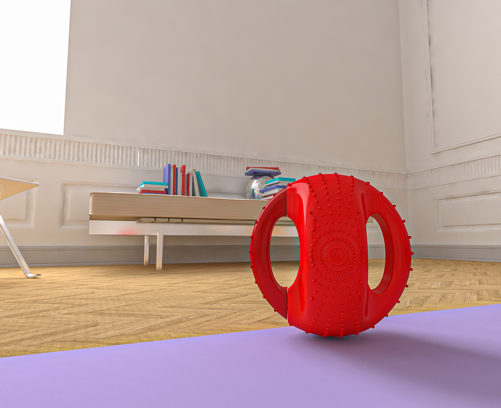
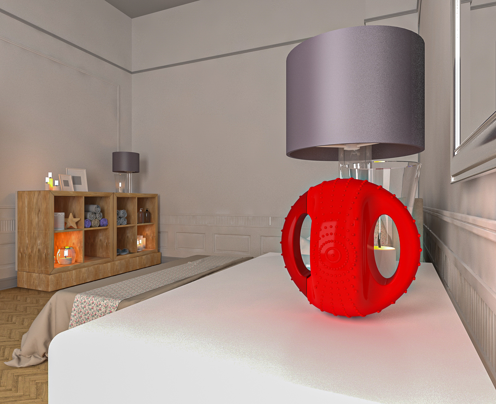
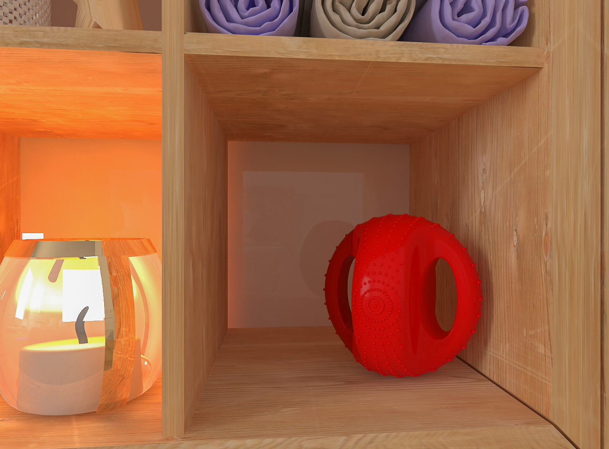
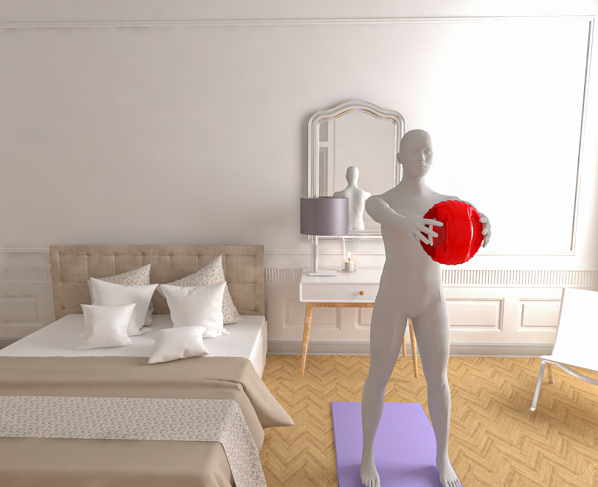

Product Design · Bioenergy · Research Diseño de Producto · Bioenergía · Investigación
A physical activation device designed for short morning breaks in sedentary daily routines. Combines stretch resistance, grip textures, and exercise weight into a single compact object — validated with a 20% increase in heart rate. Un dispositivo de activación física diseñado para pausas activas matutinas en rutinas diarias sedentarias. Combina resistencia elástica, texturas de agarre y peso de ejercicio en un único objeto compacto — validado con un aumento del 20% en la frecuencia cardíaca.
Many adults lead sedentary lives with little time for exercise. Elastic Ball was designed around a specific insight: short, frequent movement bursts during the morning routine can provide measurable cardiovascular benefits without demanding a full workout. The device combines three physical properties — elastic resistance, exercise weight, and sensory texture — in one compact object. Muchos adultos llevan vidas sedentarias con poco tiempo para ejercitarse. Elastic Ball fue diseñado alrededor de un insight específico: ráfagas de movimiento cortas y frecuentes durante la rutina matutina pueden proporcionar beneficios cardiovasculares medibles sin exigir un entrenamiento completo. El dispositivo combina tres propiedades físicas — resistencia elástica, peso de ejercicio y textura sensorial — en un único objeto compacto.
The design process was co-created: a brain sketching session with 10 participants generated ideas categorized into 4 exercise types. The final form was validated with 25 users, recording a 20% average increase in heart rate during use — confirming the product's bioenergetic function. El proceso de diseño fue co-creado: una sesión de brain sketching con 10 participantes generó ideas categorizadas en 4 tipos de ejercicio. La forma final fue validada con 25 usuarios, registrando un aumento promedio del 20% en la frecuencia cardíaca durante el uso — confirmando la función bioenergética del producto.


What I didLo que hice
Skills involvedHabilidades aplicadas
Phase 01Fase 01
Many adults lead busy, sedentary lives where formal exercise gets displaced by daily obligations. However, research in bioenergy design shows that incorporating short, frequent movements — like active work breaks — can offer significant long-term cardiovascular and metabolic benefits. Muchos adultos llevan vidas sedentarias y ocupadas donde el ejercicio formal es desplazado por las obligaciones diarias. Sin embargo, la investigación en diseño bioenergético muestra que incorporar movimientos cortos y frecuentes — como pausas activas — puede ofrecer beneficios cardiovasculares y metabólicos significativos a largo plazo.
Morning physical activation — the period when the body transitions from rest to activity — is a particularly high-impact window. It can involve structured exercise or any activity that promotes body movement, but the key constraint is time: the solution had to fit into the marginal free time of a busy daily routine. La activación física matutina — el período en que el cuerpo transita del descanso a la actividad — es una ventana de alto impacto. Puede implicar ejercicio estructurado o cualquier actividad que promueva el movimiento corporal, pero la restricción clave es el tiempo: la solución debía caber en el tiempo libre marginal de una rutina diaria ocupada.
Design questionPregunta de diseño
How might we design a device that stimulates physical movement and adapts to the daily activities of a busy and sedentary life? ¿Cómo podríamos diseñar un dispositivo que estimule el movimiento físico y se adapte a las actividades diarias de una vida ocupada y sedentaria?
Phase 02Fase 02
Rather than designing the exercise categories in isolation, a brain sketching session was facilitated with 10 participants. Multiple ideas were generated and then clustered into 4 movement categories that defined the functional scope of the product: En lugar de definir las categorías de ejercicio de forma aislada, se facilitó una sesión de brain sketching con 10 participantes. Se generaron múltiples ideas que luego se agruparon en 4 categorías de movimiento que definieron el alcance funcional del producto:
StretchEstiramiento
StrengthenFortalecimiento
Foot movementMovimiento de pie
HitGolpe
A subsequent user survey evaluated the perceived importance of each exercise type. Stretching and strengthening rated highest — these two categories became the primary functional requirements, directly shaping the elastic resistance mechanism and form factor of the final product. Una encuesta de usuarios posterior evaluó la importancia percibida de cada tipo de ejercicio. Estiramiento y fortalecimiento obtuvieron el mayor puntaje — estas dos categorías se convirtieron en los requisitos funcionales primarios, dando forma directamente al mecanismo de resistencia elástica y al factor de forma del producto final.

Brain sketching outputs, texture variants A/B/C and size explorationResultados del brain sketching, variantes de textura A/B/C y exploración de tamaño
Stretch + Strengthen as core functions. Survey results confirmed that users prioritize exercises that can be done quickly while standing or seated — no floor space required.Estiramiento + Fortalecimiento como funciones core. Los resultados de la encuesta confirmaron que los usuarios priorizan ejercicios que puedan hacerse rápidamente de pie o sentados — sin necesidad de espacio en el suelo.
Texture is functional, not decorative. Early user feedback showed that surface texture directly affects grip confidence and willingness to use the device repeatedly. Three texture variants (A, B, C) were developed and evaluated.La textura es funcional, no decorativa. La retroalimentación temprana de usuarios mostró que la textura superficial afecta directamente la confianza en el agarre y la disposición a usar el dispositivo repetidamente. Se desarrollaron y evaluaron tres variantes de textura (A, B, C).
Size determines usability context. The device must fit in one hand for independent use, and in two hands for resistance exercises — this dual-grip constraint defined the final diameter and handle geometry.El tamaño determina el contexto de uso. El dispositivo debe caber en una mano para uso independiente, y en dos manos para ejercicios de resistencia — esta restricción de doble agarre definió el diámetro final y la geometría del mango.
Phase 03Fase 03
Development followed a parallel track — form and function were iterated simultaneously. While the shape was explored through physical modelling, the elastic mechanism was being verified for functional resistance independently. El desarrollo siguió una pista paralela — forma y función se iteraron simultáneamente. Mientras la forma se exploraba mediante modelado físico, el mecanismo elástico se verificaba para resistencia funcional de manera independiente.
Sketch ideationIdeación en boceto
Brain sketching outputs translated into structural sketches exploring form, mechanism and use postureResultados del brain sketching traducidos en bocetos estructurales explorando forma, mecanismo y postura de uso
Texture explorationExploración de texturas
3 physical texture variants (A, B, C) evaluated for grip quality, tactile comfort and aesthetic response3 variantes de textura física (A, B, C) evaluadas por calidad de agarre, comodidad táctil y respuesta estética
Size & formTamaño y forma
Scale models evaluated for one-hand and two-hand grip positions, weight distribution and exercise postureModelos a escala evaluados para posiciones de agarre con una y dos manos, distribución de peso y postura de ejercicio
Mechanism verificationVerificación de mecanismo
Elastic band resistance tested to confirm sufficient load for stretch and strengthening exercisesResistencia de banda elástica probada para confirmar carga suficiente en ejercicios de estiramiento y fortalecimiento
ConstructionConstrucción
Physical prototype built integrating the elastic band mechanism inside the chosen spherical formPrototipo físico construido integrando el mecanismo de banda elástica dentro de la forma esférica elegida
Use validationValidación de uso
25 participants tested exercises with heart rate monitoring before and during use25 participantes probaron ejercicios con monitoreo de frecuencia cardíaca antes y durante el uso

Mechanism verification · use validation sessions · construction iterationsVerificación de mecanismo · sesiones de validación de uso · iteraciones de construcción
Design tension resolved: The elastic band had to provide enough resistance to raise heart rate, but not so much that it discouraged a sedentary user from picking it up each morning. The final tension was calibrated through 4 prototype iterations — too easy meant no activation; too hard meant no adoption. Tensión de diseño resuelta: La banda elástica debía proporcionar suficiente resistencia para elevar la frecuencia cardíaca, pero no tanta que desanimara a un usuario sedentario a usarla cada mañana. La tensión final se calibró a través de 4 iteraciones de prototipo — demasiado fácil significaba sin activación; demasiado difícil significaba sin adopción.
Phase 04Fase 04
The product was validated with 25 participants performing a standardized exercise sequence. Heart rate was monitored before and during use. The protocol isolated the device's contribution to activation by controlling for warm-up effects and user fitness level. El producto fue validado con 25 participantes realizando una secuencia de ejercicios estandarizada. La frecuencia cardíaca fue monitoreada antes y durante el uso. El protocolo aisló la contribución del dispositivo a la activación controlando efectos de calentamiento y nivel de condición física del usuario.
20% average heart rate increase during use across all 25 participants — confirming the product achieves its core bioenergetic function within a short session.20% de aumento promedio en frecuencia cardíaca durante el uso en los 25 participantes — confirmando que el producto logra su función bioenergética central en una sesión corta.
All 4 exercise categories functional. Stretch, strengthen, foot movement and hit exercises were all successfully performed with the device, validating the breadth of the design solution.Las 4 categorías de ejercicio funcionan. Estiramiento, fortalecimiento, movimiento de pie y golpe fueron ejecutados exitosamente con el dispositivo, validando la amplitud de la solución de diseño.
Texture C preferred for resistance exercises. The selected texture provided optimal grip during two-hand resistance movements — the highest-rated exercise category in the initial survey.Textura C preferida para ejercicios de resistencia. La textura seleccionada proporcionó agarre óptimo durante movimientos de resistencia con dos manos — la categoría de ejercicio mejor valorada en la encuesta inicial.
Limitation: The study measured activation but not habit formation. Long-term adherence — whether users would consistently use the device over weeks — was outside the scope of the project timeline.Limitación: El estudio midió activación pero no formación de hábito. La adherencia a largo plazo — si los usuarios usarían consistentemente el dispositivo durante semanas — estaba fuera del alcance del plazo del proyecto.



Use contexts — morning routine, bedroom, storageContextos de uso — rutina matutina, dormitorio, almacenamiento

Human scale — user performing resistance exerciseEscala humana — usuario realizando ejercicio de resistencia
The use context designed for: a bedroom or small space, in the morning, before or after a shower — no equipment, no floor space, no routine disruption. The product stands alone or can be used as a weighted handheld device. El contexto de uso diseñado: un dormitorio o espacio pequeño, en la mañana, antes o después de ducharse — sin equipamiento, sin espacio en el suelo, sin interrumpir la rutina. El producto funciona solo o puede usarse como dispositivo de mano con peso.